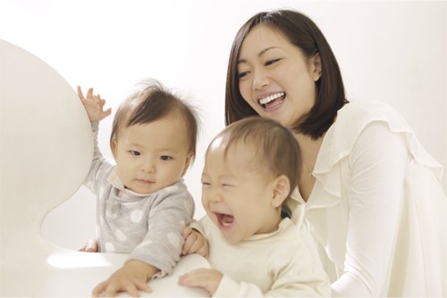
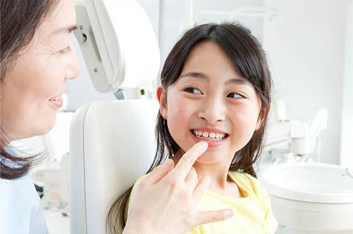
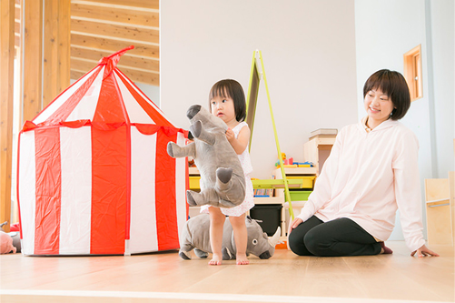
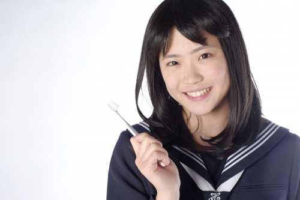

ご家族の方に
お願いしたいことParent
歯医者に通うことにも、矯正治療を受けることにも、費用がかかります。未成年のこどもは、自分自身でそれらを決めて行うことは難しく、まだまだご家族の方のサポートが必要です。
むし歯のないきれいな歯並びは、一生の財産です。お子さまの明るい未来のためには、ご家族の方のご協力が欠かせません。こちらでは佐賀県鳥栖市の歯医者「みらい歯科・こども矯正歯科」が、未成年のお子さまを持つご家族の方にお願いしたいことをご紹介します。
はじめて受診されるお子さまのご家族の方へ

定期検診に通う習慣があるこどもは極めてむし歯が少なく、かかる医療費も少ないというデータがあります。これは歯科医院で予防処置を受けたり、早期治療が可能になったりということだけでなく、「歯の健康」についての関心が高まり、自然と歯磨きの習慣が身につくためであると思われます。
つまりお口の健康を維持するには、歯科通院が欠かせません。歯医者は、決して嫌な場所になってはいけないのです。そこで当院では、こどもたちに歯医者が「楽しくて行きたくなる場所」だと思ってもらいたいと考えています。その実現のために、お子さまの診療において次のことを大切にしています。
- 本人が口を開けてくれるまで、無理に口の中を見ない
- 治療させてくれるまで、無理に治療はしない
- 本人のペースに合わせて、ゆっくり治療環境に慣れてもらう
こどもの年齢や性別、性格、兄弟関係などにより、状況は一人ひとりまったく異なります。「すぐに口を開けてくれる子」もいれば、「治療をはじめられるまで10回近くかかった子」もいます。何度もお連れいただくのはご家族の方にも負担になるかもしれませんが、どうか長い目で見てあげてください。
自分で納得して治療を受けられるようになったお子さまは、その後も自分から定期検診に来てくれるようになります。当院は、「永久歯が生えそろう前に、できるだけむし歯になりにくいお口の環境をつくること」を目標に、お子さまのお口の健康維持をサポートします。どうぞ、ご協力ください。
ご家族の方へのお願い

こどもは、歯医者に対し「痛い」「こわい」などの悪いイメージを持ってしまうと、その後歯医者に行くのが嫌になってしまいます。そうしてむし歯を放置し、痛みが出るまで悪化してからやっと来院して、さらに歯医者を嫌いになってむし歯が増えて……。こんな悪循環は阻止しなくてはなりません。
そこでお子さまが歯医者に悪いイメージを持たないよう、ご家族の方にもご協力をお願いしたいのです。たとえば、「少し痛いかもしれないけど我慢しようね」など「痛い」という言葉は決して出さず、「遊びに行こうね」などと楽しい気持ちにさせて当院まで連れてきてあげてください。
なお、当院ではお子さまに楽しく通院いていただけるよう、広いキッズフロアを設けています。まずは歯が生えはじめた3歳ころを目安に、予防のためにお子さまをお連れください。
こどもが歯並びで悩まない人生を
歯並びの乱れは遺伝のほかに、指しゃぶりや舌で前歯を押すなどの悪いクセが原因になって起こることがあります。お子さまに次のようなクセが見られる場合には、お子さま自身が長い人生を歯並びの乱れで悩まずに済むよう、注意して直してあげてください。
直してあげたいお子さまのクセ
舌や指などの悪いクセは、歯並びを乱す原因になります。気づいたら、なるべく早く治してあげましょう。
※表は左右にスクロールして確認することができます。
| 舌癖（ぜつへき） | 指しゃぶり | 態癖（たいへき） |
|---|---|---|
| 「舌で前歯を押す」「上下の前歯の間に舌を突き出す」などのクセがあると、出っ歯やすきっ歯など歯並び・噛み合わせの乱れを招くことがあります。 | 指しゃぶりのクセは前歯を押し出しているのと同じであり、歯並びを乱してしまいます。 | うつぶせ寝や頬杖などのよくない生活習慣があると、長時間にわたってあごや歯列に負担をかけ、噛み合わせに悪影響を与えます。 |
早めの治療が必要なケース
次のような場合、早めの治療が必要になることがあります。これらは診察をしてみないとわかりませんので、まずは一度お子さまをお連れください。
- あごがずれた状態で噛んでいる
- 指しゃぶりなどのクセが原因になり歯並びが乱れている
- 上あごの拡大が必要なケース
- 奥歯の移動が必要なケース
- 骨格に問題があるケース など
こどもの成長と矯正治療
お子さまの歯の状態が正しいのか、よくないのか、ご家族の方では判断が難しいケースも少なくありません。こどもの歯について基本的な情報を知り、ご家族の方が意識してチェックしてあげてください。
こちらでは佐賀県鳥栖市の歯医者「みらい歯科・こども矯正歯科」が、年齢別に見るこどもの歯の状態や、こどもの成長に合わせた2段階の矯正治療についてご紹介します。
年齢別・こどもの歯の状態
| 3～6歳ころ 乳歯列期 |
すべての歯が乳歯の時期です。このころに指しゃぶりなどのクセがあったり、むし歯を悪化させたりすると、歯並びを乱すことにつながる可能性があります。定期的に歯科医師によるチェックを受けましょう。 |
|---|---|
| 7～10歳ころ 混合歯列期 |
乳歯と永久歯が混在している時期です。I期治療によって骨格やあごの骨をコントロールすることで、歯並びを整えることができます。 |
| 12～15歳ころ 永久歯列期 |
すべての永久歯が生えそろいました。当院ではこの時期より前に矯正治療を受けることをおすすめしていますが、すでにこの年齢になっている場合には、成長が止まってしまう前にII期治療によって正しい歯並びに導いてあげましょう。 |
こどもの成長に合わせた2段階の矯正治療
矯正治療は、こどもの成長に合わせてI期治療とII期治療を選択します。その違いは次の通りです。
I期治療： こどもの歯が残っている時期（乳歯列期・混合歯列期）の矯正治療

この時期のこどもは成長期にあり、まだあごの骨やあご自体もやわらいため骨格から矯正しやすい時期だといえます。日本人はあごの小さい人が多い上に、近年では食生活の変化によって、こどものあごが小さくなっている傾向があります。そこで取り外しできる装置を使って、あごの骨を拡げる治療が必要になるのです。
併せて、指しゃぶりなどの悪いクセがある場合には、その改善も行います。早い時期からこの治療に取り組むことで、歯並びが大きく乱れてしまう前に対処することが可能です。その後すべて永久歯に生え替わったとき、歯並びに問題がなければI期治療のみで終わりますが、さらに改善が必要な場合にはII期治療に移ります。
II期治療： おとなの歯が生えそろった時期（永久歯列期）

すべての歯が永久歯に生え替わってから行うのが、II期治療です。年齢の目安は12歳～18歳ころ。多くの場合歯の表面に小さなブラケットという装置を取り付け、ワイヤーを通して歯を動かしていく、もっとも一般的な治療方法を用います。
この時期はまだ完全には成長が止まっていないため、成長が完了したおとなに比べて歯が動きやすいのがメリットです。
またおとなの矯正治療では、見た目を重視して、裏側矯正やマウスピース矯正を選ばれるケースが多くなります。おとなになってからの矯正治療は、時間がかかる上に抜歯が必要になる確率も高まるため、できるだけ早くご相談いただくことをおすすめします。